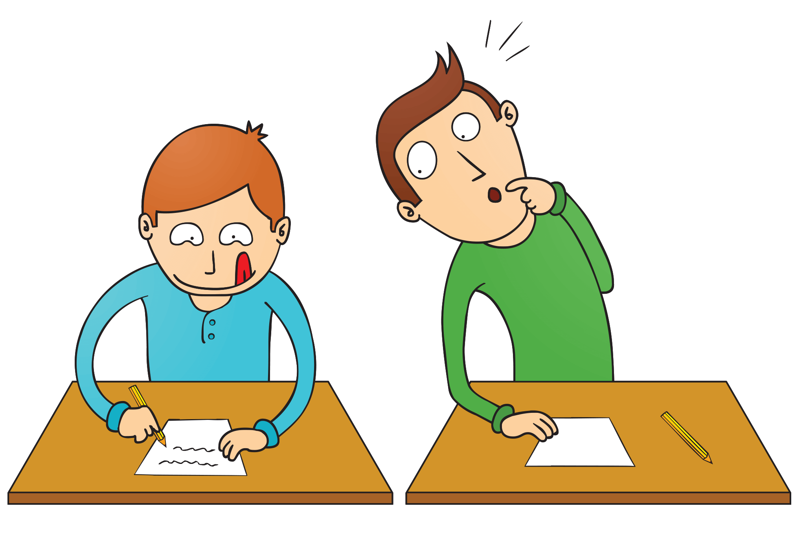
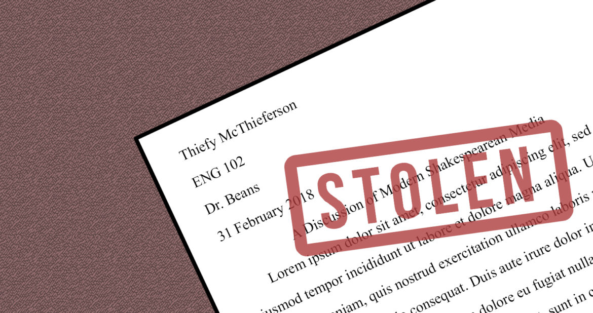
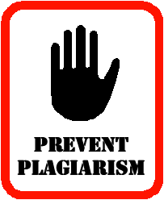
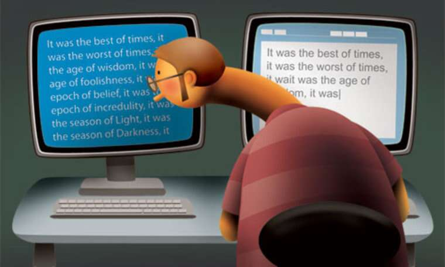
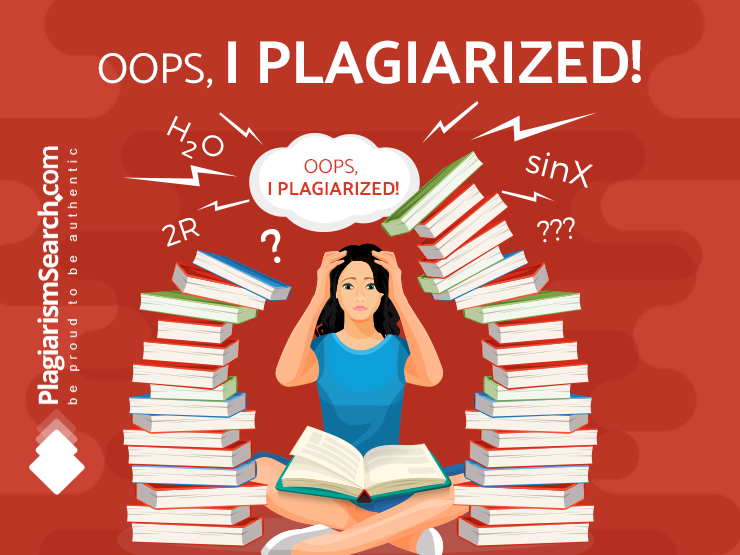

| HOME
| TYPES OF PLAGIARSM
| REASONS OF PLAGIARSM
| PREVENTION OF PLAGIARSM
| CASES OF PLAGIARISM
| LAWS OF PLAGIARISM
| BIBLIOGRAPHY |
Plagiarism
- What is Plagiarism?
- Plagiarism is the unethical
practice of using words or
ideas (either planned or accidental)
of another author/researcher or your
own previous works without proper
acknowledgment.
- Has Plagiarism Been Getting Worse in Recent Years?
- In recent years, chiefly due to the popularity of
over the internet assignment purchases, plagiarism
has gotten worse. There has been a spike in plagiarism
across much of the academic institutions based in the UK.
Indeed in the last 3 years alone, 50,000 students have been
caught plagiarising. This figure does not allow for those
students who have plagiarised and not been caught, thus
illustrating the scale of the problem.
- Why does it matter?
- Plagiarism is a serious problem. If you as a student
are caught plagiarising it can have serious consequences
for your future academic and work career. Aside from the
disciplinary perspective, plagiarism also harms the extent
to which you as a student can learn whilst in years of
academic study. When you cheat through plagiarism you
are ultimately cheating yourself as you have spoiled
the chance to learn and develop your knowledge on a
specific subject. This learning and development
skillset could stand you in good stead for later life
so from all perspectives, plagiarism is something which
should be avoided at all costs.
Different Types of Plagiarism

Direct Plagiarism:
Direct plagiarism is the word-for-word transcription of a section of
someone else’s work, without attribution and without
quotation marks. The deliberate plagiarism of someone else's work is
unethical, academically dishonest, and grounds for disciplinary
actions, including expulsion.

Self Plagiarism:

Self-plagiarism occurs when a student submits
his or her own previous work, or mixes parts of previous works, without permission
from all professors involved. For example, it would be unacceptable to incorporate part
of a term paper you wrote in high school into a paper assigned in a college course.
Self-plagiarism also applies to submitting the same piece of work for assignments in
different classes without previous permission from both professors.

Mosaic Plagiarism:
Mosaic Plagiarism occurs when a student
borrows phrases from a source without using quotation marks, or finds synonyms for
the author’s language while keeping to the same general structure and meaning of
the original. Sometimes called “patch writing,” this kind of paraphrasing, whether
intentional or not, is academically dishonest and punishable – even if you
footnote your source!

Accidental Plagiarism:
 Accidental plagiarism occurs
when a person neglects to cite their sources, or misquotes their sources,
or unintentionally paraphrases a source by using similar words, groups
of words, and/or sentence structure without attribution.
Students must learn how to cite their sources
and to take careful and accurate notes when doing research.
Lack of intent does not absolve the student of responsibility for plagiarism.
Cases of accidental plagiarism are taken as seriously as any other plagiarism
and are subject to the same range of consequences as other types of plagiarism.
Accidental plagiarism occurs
when a person neglects to cite their sources, or misquotes their sources,
or unintentionally paraphrases a source by using similar words, groups
of words, and/or sentence structure without attribution.
Students must learn how to cite their sources
and to take careful and accurate notes when doing research.
Lack of intent does not absolve the student of responsibility for plagiarism.
Cases of accidental plagiarism are taken as seriously as any other plagiarism
and are subject to the same range of consequences as other types of plagiarism.